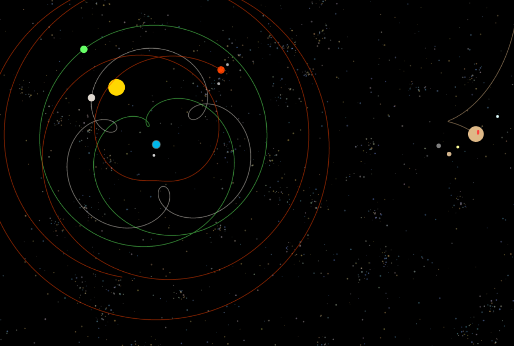

Bio Tank
Behaviors over hardcoding. Bubbles merge, munchers almost flock, meat eaters keep the tank self-regulating. Emergent and pretty — hit tab for debug stats.

All We Are Is Grok in the Wind
Custom white-noise machine: sixteen band-pass channels, per-band gain and slow LFOs. My windy background for days — randomize, tweak, save to JSON.

Geocentric Heliocentric with Orbit Trails
Geocentric vs heliocentric with dynamic orbit trails. Started from a one-line Grok prompt — solar_system_earth_to_sun — and grew from there.

War of the Planetoids
Arcade duel that's been on my mind for years. Circles became shapes, an AI opponent kept pace, and the sound is all HTML5 audio.